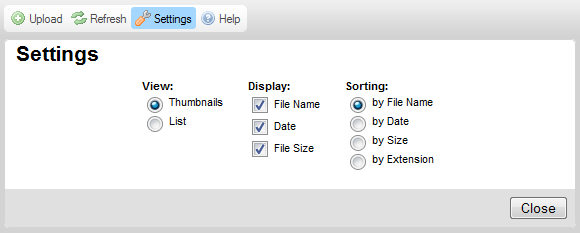
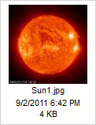

Tla膷铆tko Nastaven铆 (Settings), kter茅 je dostupn茅 v Panelu n谩stroj暖 CKFinder otev艡e Panel nastaven铆, kde si m暖啪ete CKFinder nastavit a p艡izp暖sobit.
Obr谩zek n铆啪e p艡edstavuje Panel nastaven铆, kter媒 je rozbalen p艡i kliknut铆 na tla膷铆tko panelu n谩stroj暖.

V拧echna nastaven铆 jsou automaticky ulo啪ena pomoc铆 "cookies" v internetov茅m prohl铆啪e膷i. "Cookies" jsou mal茅 soubory, kter茅 ukl谩daj铆 soukrom茅 informace o nastaven铆 pro ur膷it茅 str谩nky na Va拧em po膷铆ta膷i.
Abyste zav艡eli (sbalili) Panel n谩stroj暖, stiskn臎te tla膷铆tko Zav艡铆t (Close) nebo znovu klikn臎te na tla膷铆tko Nastaven铆 (Settings).
V拧echny mo啪nosti nastaven铆 se vztahuj铆 k Panelu slo啪ek a kontroluj铆 zp暖sob, jak媒m jsou soubory v CKFinder zobrazeny. Panel soubor暖 okam啪it臎 zareaguje na zm臎ny v Panelu nastaven铆.
Nastav铆 re啪im zobrazen铆 v Panelu soubor暖:
Nastav铆 mno啪stv铆 informac铆, kter茅 jsou dostupn茅 v Panelu soubor暖. N谩sleduj铆c铆 mo啪nosti mohou b媒t zapnuty 膷i vypnuty:
Pokud pou啪铆v谩te re啪im zobrazen铆 N谩hled, m暖啪ete od拧krtnout v拧echny mo啪nosti. V re啪imu Seznam bude n谩zev souboru v啪dycky zobrazen.
Obr谩zek n铆啪e p艡edstavuje r暖zn茅 mo啪nosti zobrazen铆 tak, jak jsou zobrazeny v re啪imu N谩hled.
|
|
|
|
 |
Nastav铆 po艡ad铆, v kter茅m budou soubory zobrazeny. Jsou dostupn茅 n谩sleduj铆c铆 mo啪nosti: